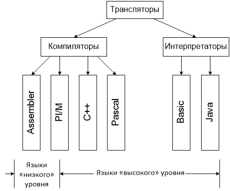

Системы программирования – это комплексы программ и прочих средств, предназначенных для разработки и их эксплуатации на конкретном языке программирования для конкретного вида ЭВМ.
Система программирования включает следующие программные модули:
Текстовые редакторы, служащие для создания текстов исходных программ.
Компиляторы, предназначенные для перевода исходного текста на входном языке в язык машинных кодов.
Компоновщики, позволяющие объединять несколько объектных модулей, порождаемых компилятором, в одну программу.
Библиотеки прикладных программ, содержащие в себе наиболее часто используемые подпрограммы в виде готовых объектных модулей.
Загрузчики, обеспечивающие подготовку готовой программы к выполнению.
Отладчики, выполняющие программу в заданном режиме (например, пошаговом) с целью поиска, обнаружения и локализации ошибок.
С помощью языка программирования создается не готовая программа, а только ее текст, описывающий ранее разработанный алгоритм. Чтобы получить работающую программу, надо либо автоматически перевести этот текст в машинный код и затем использовать отдельно от исходного текста, либо сразу выполнять команды языка, указанные в тексте программы. Для этого используются программы-трансляторы.
Транслятор – это программа, которая переводит входную программу на исходном (входном) языке в эквивалентную ей выходную программу на результирующем (выходном) языке.
Выделяют два вида трансляторов: интерпретаторы и компиляторы.
Интерпретатор переводит на язык машинных кодов поочередно каждый оператор исходной программы, проверяет правильность записи оператора и немедленно выполняет его.
Существует два основных недостатка метода интерпретации:
1) Интерпретирующая программа должна располагаться в памяти ЭВМ на протяжении всего процесса выполнения исходной программы. Другими словами, она должна занимать некоторый установленный объем памяти;
2) Процесс трансляции одного и того же оператора повторяется такое число раз, которое должна исполнять эта команда в программе. Это приводит к резкому снижению производительности работы программы.
Трансляторы-интерпретаторы являются достаточно распространенными, так как они поддерживают диалоговый режим.
В отличие от интерпретатора компилятор осуществляет перевод на машинный язык всей исходной программы.
Преимуществом компиляторов по сравнению с интерпретаторами является быстродействие, а недостатком – громоздкость.
Процессы трансляции и выполнения при компиляции разделяются во времени: сначала исходная программа в полном объеме переводится на машинный язык, после чего оттранслированная программа может многократно исполняться. Для трансляции методом компиляции необходим неоднократный «просмотр» транслируемой программы, т. е. трансляторы - компиляторы являются многопроходными. Трансляция методом компиляции носит название объектного модуля, который представляет собой эквивалентную программу в машинных кодах. Необходимо, чтобы перед исполнением объектный модуль обрабатывался специальной программой ОС и преобразовывался в загрузочный модуль.
Применяют также трансляторы интерпретаторы-компиляторы, объединяющие в себе достоинства обоих принципов трансляции.
Большинство современных компиляторов работают в режиме трансляции.

Основные блоки (фазы) компилятора, их функции
Исходная программа, написанная на некотором языке программирования, есть цепочка знаков. Компилятор в конечном итоге превращает эту цепочку знаков в цепочку битов – объектный код.
В процессе компиляции можно выделить следующие подпроцессы (блоки, этапы).
1. Лексический анализ.
2. Работа с таблицами.
3. Синтаксический анализ, или разбор.
4. Генерация кода, или трансляция в промежуточный код (например, языка ассемблер).
5. Оптимизация кода.
6. Генерация объектного кода.
Замечание. В конкретных компиляторах порядок может несколько отличаться, а некоторые блоки могут объединяться в один. В реальном компиляторе блоки не обязательно разделены.
Лексический анализ
Входом является цепочка символов некоторого алфавита.
Некоторые комбинации символов в программе рассматриваются как единые объекты – лексемы (например, зарезервированные слова, идентификаторы, числовые константы).
Работа лексического анализатора состоит в том, чтобы сгруппировать определенные символы в единые синтаксические объекты – лексемы.
Выходом является последовательность лексем.
Работа с таблицами
Информация о лексемах собирается и записывается в одну или несколько таблиц, например, в виде списка лексем и соответствующей информации о них.
Синтаксический анализ
Вход – цепочка лексем.
На этом этапе исследуется цепочка лексем и устанавливается, удовлетворяет ли она структурным условиям, явно сформулированным в определении синтаксиса языка.
Выходом анализатора является дерево, которое представляет синтаксическую структуру, присущую исходной программе.
Генерация кода
Полученное дерево используется для перевода входной программы в программу на машинном языке, но чаще осуществляется перевод на промежуточный язык (ассемблер).
Замечание. На практике чаще одновременно строится и дерево, и код.
Существует несколько методов построения промежуточного кода по синтаксическому дереву. Основным из них является синтаксически управляемый перевод (трансляция).
На двух этапах – синтаксического разбора и в начале этапа подготовки к генерации кода – выполняется семантический анализ . Семантический анализатор проверяет семантические соглашения входного языка, проверяет элементарные семантические (смысловые) нормы языков программирования, напрямую не связанных с входным языком; дополняет внутреннее представление программы в компиляторе операторами и действиями, неявно предусмотренными семантикой входного языка.
Оптимизация кода
Попытка сделать объектные программы более эффективными (т.е. быстрее работающими или более компактными).
Так, для операций, составляющих линейный участок программы, может применяться удаление бесполезных присваиваний, исключение лишних операций, перестановка операций, арифметические преобразования.
Еще одним методом оптимизации кода является оптимизация вычисления логических выражений (не всегда полностью надо выполнять вычисление всего выражения, чтобы знать его результат, иногда по значению одного операнда можно определить значение всего выражения).
Оптимизация передачи параметров в процедуры и функции через стек не является эффективным, если выполняются несложные вычисления над небольшим количеством параметров (всякий раз при вызове процедуры компилятор создает объектный код для размещения фактических параметров в стеке, а при выходе – код для освобождения ячеек). Эффективность результирующей программы повышается при передаче параметров через регистры либо подстановкой кода функции в вызывающий объектный код.
Для оптимизации циклов используются следующие методы: вынесение инвариантных вычислений из циклов (вынесение тех операций, операнды которых не изменяются); замена операций с индуктивными переменными (изменение сложных операций с переменными, значения которых в процессе выполнения цикла образуют арифметическую прогрессию, на более простые операции); слияние и развертывание циклов (слияние двух вложенных циклов в один и замена цикла на линейную последовательность операций).
Генерация объектного кода
Последний заключительный этап. Происходит порождение команд, составляющих предложения выходного языка и в целом текст результирующей программы.
В некоторых языках, вместо машинного кода генерируется интерпретируемый двоичный код " виртуальной машины ", также называемый байт-кодом (byte-code). Такой подход применяется в Forth, Lisp, Java , Perl, Python, а также в языках платформы Microsoft .NET.
Например: Программы на Java выполняются в два этапа. Сначала исходный текст компилятором переводится на промежуточный аппаратно-независимый язык. В таком виде полуфабрикат программы (байт-код) хранится на интернет-сервере, откуда по запросу клиента пересылается ему по сети. У клиента байт-код исполняется специальным интерпретатором, этот интерпретатор называется виртуальной Java-машиной, он встроен во все современные браузеры.
Среда визуальной разработки — среда разработки программного обеспечения, в которой наиболее распространённые блоки программного кода представлены в виде графических объектов. Применяются для создания прикладных программ и любительского программирование.
Синтаксис и семантика
Каждый язык программирование обладает своими лексическими, синтаксическими и семантическими правилами, которые необходимо соблюдать при составлении компьютерной программы.
Синтаксис – описывает структуру программ как наборов символов (обычно говорят — безотносительно к содержанию).
Пример синтаксической ошибки: употребление оператора цикла For без To или Next, или отсутствие знака равенства в приведенной на рисунке программе.
Синтаксические ошибки распознаются встроенным синтаксическим анализатором.
Синтаксису языка противопоставляется его семантика. Синтаксис языка описывает «чистый» язык, в то же время семантика приписывает значения (действия) различным синтаксическим конструкциям.
Семантика – определяет смысловое значение предложений алгоритмического языка.
Инструкция